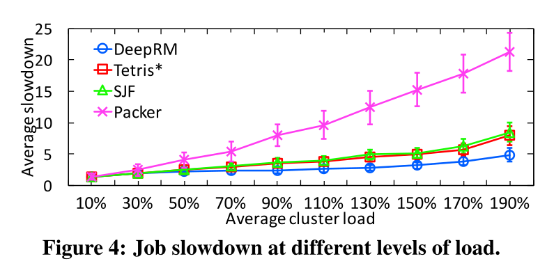

3. Policy gradient¶
Slides: pdf
3.1. Policy Search¶
Learning directly the Q-values in value-based methods (DQN) suffers from many problems:
The Q-values are unbounded: they can take any value (positive or negative), so the output layer must be linear.
The Q-values have a high variability: some \((s,a)\) pairs have very negative values, others have very positive values. Difficult to learn for a NN.
Works only for small discrete action spaces: need to iterate over all actions to find the greedy action.
Instead of learning the Q-values, one could approximate directly the policy \(\pi_\theta(s, a)\) with a neural network. \(\pi_\theta(s, a)\) is called a parameterized policy: it depends directly on the parameters \(\theta\) of the NN. For discrete action spaces, the output of the NN can be a softmax layer, directly giving the probability of selecting an action. For continuous action spaces, the output layer can directly control the effector (joint angles). Parameterized policies can represent continuous policies and avoid the curse of dimensionality.

Fig. 3.10 Policy search methods learn directly the policy.¶
Policy search methods aim at maximizing directly the expected return over all possible trajectories (episodes) \(\tau = (s_0, a_0, \dots, s_T, a_T)\)
All trajectories \(\tau\) selected by the policy \(\pi_\theta\) should be associated with a high expected return \(R(\tau)\) in order to maximize this objective function. \(\rho_\theta\) is the space of trajectories possible under \(\pi_\theta\). This means that the optimal policy should only select actions that maximizes the expected return: exactly what we want.

Fig. 3.11 Policy search maximizes the return of the trajectories generated by the policy.¶
The objective function is however not model-free, as the probability of a trajectory does depend on the environments dynamics:
The objective function is furthermore not computable:
An infinity of possible trajectories to integrate if the action space is continuous.
Even if we sample trajectories, we would need a huge number of them to correctly estimate the objective function (sample complexity) because of the huge variance of the returns.
All we need to find is a computable gradient \(\nabla_\theta \mathcal{J}(\theta)\) to apply gradient ascent and backpropagation.
Policy Gradient (PG) methods only try to estimate this gradient, but do not care about the objective function itself…
In particular, any function \(\mathcal{J}'(\theta)\) whose gradient is locally the same (or has the same direction) will do:
This is called surrogate optimization: we actually want to maximize \(\mathcal{J}(\theta)\) but we cannot compute it. We instead create a surrogate objective \(\mathcal{J}'(\theta)\) which is locally the same as \(\mathcal{J}(\theta)\) and tractable.

Fig. 3.12 Policy gradient methods only care about the gradient of the objective function. Source: https://www.freecodecamp.org/news/an-introduction-to-policy-gradients-with-cartpole-and-doom-495b5ef2207f/.¶
3.2. REINFORCE¶
3.2.1. REINFORCE algorithm¶
The REINFORCE algorithm [Williams, 1992] proposes an unbiased estimate of the policy gradient:
by noting that the return of a trajectory does not depend on the weights \(\theta\) (the agent only controls its actions, not the environment).
We now use the log-trick, a simple identity based on the fact that:
to rewrite the policy gradient of a single trajectory:
The policy gradient becomes:
which now has the form of a mathematical expectation:
The advantage of REINFORCE is that it is model-free:
The transition dynamics \(p(s_{t+1} | s_t, a_t)\) disappear from the gradient. The Policy Gradient does not depend on the dynamics of the environment:
The REINFORCE algorithm is a policy-based variant of Monte-Carlo control:
REINFORCE algorithm
while not converged:
Sample \(M\) trajectories \(\{\tau_i\}\) using the current policy \(\pi_\theta\) and observe the returns \(\{R(\tau_i)\}\).
Estimate the policy gradient as an average over the trajectories:
\[ \nabla_\theta \mathcal{J}(\theta) \approx \frac{1}{M} \sum_{i=1}^M \sum_{t=0}^T \nabla_\theta \log \pi_\theta(s_t, a_t) \, R(\tau_i) \]Update the policy using gradient ascent:
\[ \theta \leftarrow \theta + \eta \, \nabla_\theta \mathcal{J}(\theta) \]
Advantages
The policy gradient is model-free.
Works with partially observable problems (POMDP): as the return is computed over complete trajectories, it does not matter whether the states are Markov or not.
Inconvenients
Only for episodic tasks.
The gradient has a high variance: returns may change a lot during learning.
It has therefore a high sample complexity: we need to sample many episodes to correctly estimate the policy gradient.
Strictly on-policy: trajectories must be frequently sampled and immediately used to update the policy.
3.2.2. REINFORCE with baseline¶
To reduce the variance of the estimated gradient, a baseline is often subtracted from the return:
As long as the baseline \(b\) is independent from \(\theta\), it does not introduce a bias:
A simple baseline that reduces the variance of the returns is a moving average of the returns obtained during all episodes:
This is similar to reinforcement comparison for bandits, except we compute the mean return instead of the mean reward. A trajectory \(\tau\) should be reinforced if it brings more return than average.
[Williams, 1992] showed that the best baseline (the one that reduces the variance the most) is actually:
but it is complex to compute. In practice, a baseline that works well is the value of the encountered states:
\(R(\tau) - V^\pi(s_t)\) becomes the advantage of the action \(a_t\) in \(s_t\): how much return does it provide compared to what can be expected in \(s_t\) generally. As in dueling networks, it reduces the variance of the returns. Problem: the value of each state has to be learned separately (see actor-critic architectures).
Application of REINFORCE to resource management

REINFORCE with baseline can be used to allocate resources (CPU cores, memory, etc) when scheduling jobs on a cloud of compute servers. In DeepRM [Mao et al., 2016], the policy is approximated by a shallow NN (one hidden layer with 20 neurons). The state space is the current occupancy of the cluster as well as the job waiting list. The action space is sending a job to a particular resource. The reward is the negative job slowdown: how much longer the job needs to complete compared to the optimal case. DeepRM outperforms all alternative job schedulers.

3.3. Policy Gradient¶
3.3.1. Policy Gradient theorem¶
The REINFORCE gradient estimate is the following:
For each state-action pair \((s_t, a_t)\) encountered during the episode, the gradient of the log-policy is multiplied by the complete return of the episode:
The causality principle states that rewards obtained before time \(t\) are not caused by that action. The policy gradient can be rewritten as:
The return at time \(t\) (reward-to-go) multiplies the gradient of the log-likelihood of the policy(the score) for each transition in the episode:
As we have:
we can replace \(R_t\) with \(Q^{\pi_\theta}(s_t, a_t)\) without introducing any bias:
This is true on average (no bias if the Q-value estimates are correct) and has a much lower variance!
The policy gradient is defined over complete trajectories:
However, \(\nabla_\theta \log \pi_\theta(s_t, a_t) \, Q^{\pi_\theta}(s_t, a_t)\) now only depends on \((s_t, a_t)\), not the future nor the past. Each step of the episode is now independent from each other (if we have the Markov property). We can then sample single transitions instead of complete episodes:
Note that this is not true for \(\mathcal{J}(\theta)\) directly, as the value of \(\mathcal{J}(\theta)\) changes (computed over single transitions instead of complete episodes, so it is smaller), but it is true for its gradient (both go in the same direction)!
Policy Gradient Theorem
For any MDP, the policy gradient is:
3.3.2. Policy Gradient Theorem with function approximation¶
Better yet, [Sutton et al., 1999] showed that we can replace the true Q-value \(Q^{\pi_\theta}(s, a)\) by an estimate \(Q_\varphi(s, a)\) as long as this one is unbiased:
We only need to have:
The approximated Q-values can for example minimize the mean square error with the true Q-values:
3.3.3. Actor-critic architectures¶
We obtain an actor-critic architecture:
the actor \(\pi_\theta(s, a)\) implements the policy and selects an action \(a\) in a state \(s\).
the critic \(Q_\varphi(s, a)\) estimates the value of that action and drives learning in the actor.
{kind=link}
Fig. 3.13 Actor-critic architecture for policy gradient.¶
But how to train the critic? We do not know \(Q^{\pi_\theta}(s, a)\). As always, we can estimate it through sampling:
Monte-Carlo critic: sampling the complete episode.
SARSA critic: sampling \((s, a, r, s', a')\) transitions.
Q-learning critic: sampling \((s, a, r, s')\) transitions.
As with REINFORCE, the PG actor suffers from the high variance of the Q-values. It is possible to use a baseline in the PG without introducing a bias:
In particular, the advantage actor-critic uses the value of a state as the baseline:
The critic can either:
learn to approximate both \(Q^{\pi_\theta}(s, a)\) and \(V^{\pi_\theta}(s)\) with two different NN (SAC).
replace one of them with a sampling estimate (A3C, DDPG)
learn the advantage \(A^{\pi_\theta}(s, a)\) directly (GAE, PPO)
Policy Gradient methods can therefore take many forms :
where:
\(\psi_t = R_t\) is the REINFORCE algorithm (MC sampling).
\(\psi_t = R_t - b\) is the REINFORCE with baseline algorithm.
\(\psi_t = Q^\pi(s_t, a_t)\) is the policy gradient theorem.
\(\psi_t = A^\pi(s_t, a_t) = Q^\pi(s_t, a_t) - V^\pi(s_t)\) is the advantage actor-critic.
\(\psi_t = r_{t+1} + \gamma \, V^\pi(s_{t+1}) - V^\pi(s_t)\) is the TD actor-critic.
\(\psi_t = \sum_{k=0}^{n-1} \gamma^{k} \, r_{t+k+1} + \gamma^n \, V^\pi(s_{t+n+1}) - V^\pi(s_t)\) is the n-step advantage.
and many others…
The different variants of PG deal with the bias/variance trade-off.
The more \(\psi_t\) relies on sampled rewards (e.g. \(R_t\)), the more the gradient will be correct on average (small bias), but the more it will vary (high variance). This increases the sample complexity: we need to average more samples to correctly estimate the gradient.
The more \(\psi_t\) relies on estimations (e.g. the TD error), the more stable the gradient (small variance), but the more incorrect it is (high bias). This can lead to suboptimal policies, i.e. local optima of the objective function.
All the methods we will see in the rest of the course are attempts at finding the best trade-off.